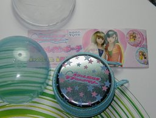
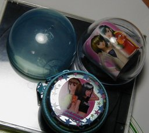
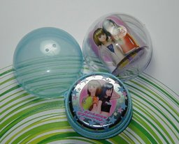

セガトイズ ラブ and ベリー オシャレカンポーチ スカイブルー



SEGA TOYS オシャレ魔女♡ラブandベリー オシャレカンポーチのスカイブルー ver.です。直径は 6cm ぐらいです。 私はさすがに恥ずかしいので、興味を持ちつつも、ラブandベリーを自分でやったことはないのですが、たまたま人を待っているときに、このガシャポンを見て、人がいないのを見はからって、当てたのが、このカンポーチになります。 ラブandベリーのような３Ｄポリゴンは広義にはフィギュアなのでしょうが、映されているときのみ存在することを考えると、元から「フィギュア写真」とでもいうべき性質があるともいえます。 そのフィギュア映像を金属性の実オブジェクトにプリントして動きを固定しているのですから、これまで私がやってきた CG を背景にしたフィギュア写真の逆をやっているような気分になります。まぁ、そこは大目に見てフィギュア写真として紹介することにしました。 背景は、XBOX 360の宣伝用ダイレクトメールのもので、これまでもフィギュアの台としてよく使っていたものです。 <b>参考</b> 《YUJIN SR セガギャルズコレクション うらら シークレット Ver.》 《ラブandベリー: セガはＶマーガレットでも出せ》 更新：2006-05-28 初公開：2006年05月28日 08:12:39 最新版：2006年05月28日 08:14:47
Trackbacks: 《ラブandベリー人気でフィーバー》 from おれのゲームは宇宙いちぃ ラブandベリー人気がすごいらしい。なんか、洋服のお店まで出てるんでしょ？ムシキングで一発当てて、ラブandベリーで大フィーバー！！ 受信： 2006-05-31 15:09:04 (JST)
Links: SEGA TOYS: http://segatoys.co.jp/osharemajo/index.html (hbm) ラブandベリー: http://osharemajo.com/ (hbm) XBOX 360: http://www.xbox.com/ja-JP/ YUJIN SR セガギャルズコレクション うらら シークレット Ver.: http://jrf.cocolog-nifty.com/column/2006/03/post_22.html ラブandベリー: セガはＶマーガレットでも出せ: http://jrf.cocolog-nifty.com/column/2006/02/post_24.html